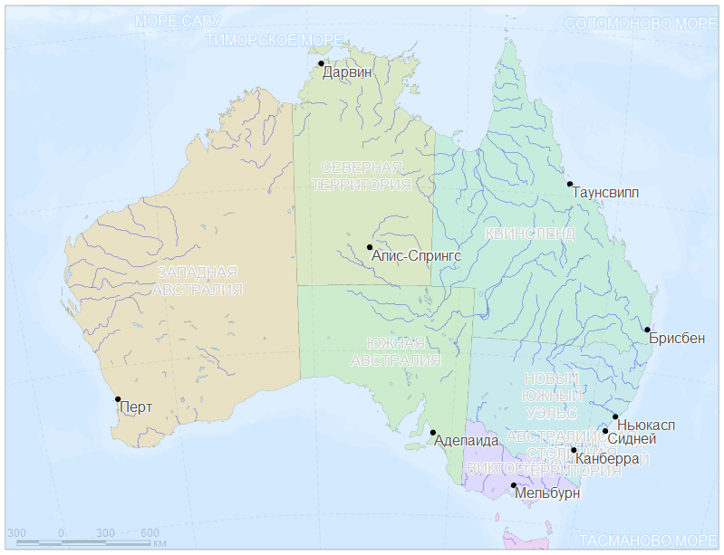
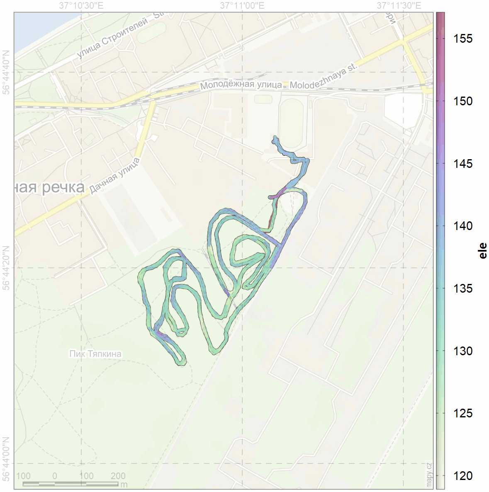

| Занятие | Тема | Дата |
|---|---|---|
| 01 | Общие вопросы, введение | 17 марта |
| 02 | Начало работы с QGIS | 24 марта |
| 03 | Основы работы с пространственными данными | 24 марта |
| 04 | Возможности R для работы с пространственными данными | 31 марта |
| 05 | Пространственные данные: получение и обработка | 07 апреля |
| 06 | Операции с геометрией | 21 апреля |
| 07 | Советы и рекомендации | 14 апреля |
| 08 | Пространственные данные в качестве учебного материала | 07 апреля, 14 апреля |
| Занятие | Тема |
|---|---|
| 01 | Общие вопросы, введение |
| Занятие | Тема |
|---|---|
| 02 | Начало работы с QGIS |
| 03 | Основы работы с пространственными данными |
| Занятие | Тема |
|---|---|
| 04 | Возможности R для работы с пространственными данными |
| Занятие | Тема |
|---|---|
| 05 | Пространственные данные: получение и обработка |
| 08 | Пространственные данные в качестве учебного материала |
| Занятие | Тема |
|---|---|
| 07 | Советы и рекомендации |
| 08 | Пространственные данные в качестве учебного материала |
| Занятие | Тема |
|---|---|
| 06 | Операции с геометрией |
Получение данных и работа с ними рассмотрены на этом занятии.
Локации белого медведя DOI: 10.5066/P9ZRJ3XU.
Должны быть сформированы следующие файлы:
Запись траектории с лыжной прогулки, выполненная приложением OsmAnd в формате GPX 🡇
| Выдано | 07 апреля |
| Сдача | 14 апреля |
| Программное обеспечение | QGIS |
| Цель | Научиться оперировать с инструментами QGIS для получения данных и оформления слоев проекта, включая стили оформления и подписи топонимов |
| Задание | На основе данных Natural Earth 1:10m cоздать картооснову, ориентируясь на территорию, охватывающую Карелию и Мурманскую области. Желательно включить административные границы, батиметрию и контуры высот. Экспортировать через Export Image или Print Layout два изображения, соответствующих русскоязычным журнальным требованиям, с различным пространственным охватом: 1) только Кольский п-ов, 2) вместе Карелия и Мурманская обл. |
| Отчетность | 1. PNG/TIFF/PDF с охватом Кольского полуострова 2. PNG/TIFF/PDF с охватом Карелии и Мурманской обл. |
| Подсказки | Данные Natural Earth World GIS Data. Посмотреть также OSM данные по регионам России на сайте проекта Geofabrik для крупномасштабных карт. Обратить внимание на присутствие в атрибутивной таблице русскоязычных полей. |

| Выдано | 14 апреля |
| Сдача | 21 апреля |
| Программное обеспечение | R, QGIS |
| Цель | Научиться анализу пространственных данных на примере обработки траекторий с GPS. |
| Задание | Проанализировать записанный трек лыжной прогулки. Выделить участки трассы и подхода/ухода между трассой и базой (раздевалкой). Оценить такие характеристики, как длина круга, средняя скорость прохождения круга, время начала и окончания круга, неравномерность перемещения. Определить максимальное удаление от базы. |
| Отчетность | Файл с отчетом или презентацией результатов анализа. |
| Подсказки | Данные взять отсюда. Записи (таблица атрибутов) содержат информацию по высоте, которая может быть использована для объяснения неравномерности скорости движения. |
